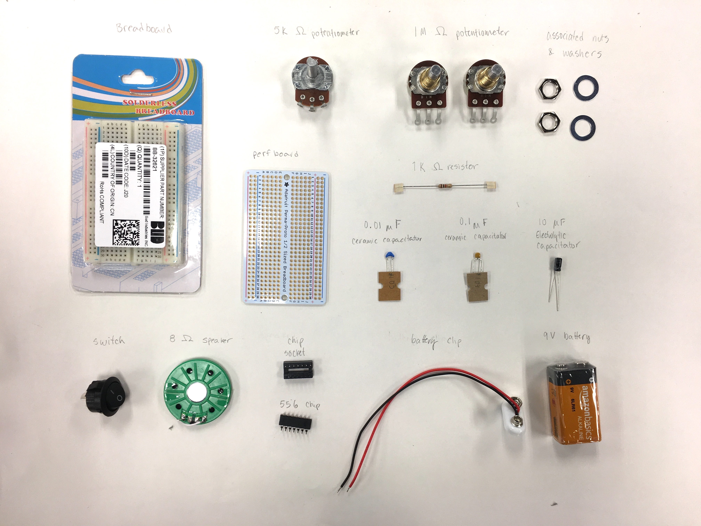
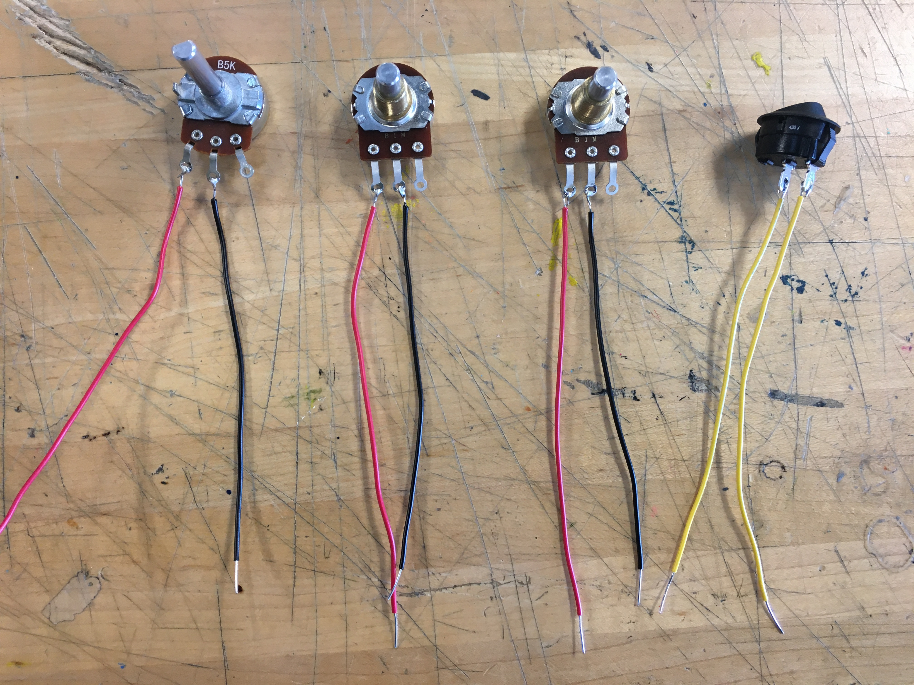
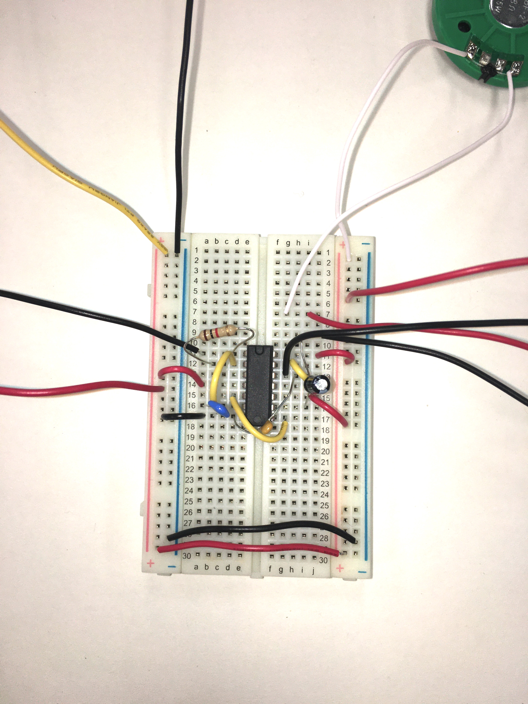
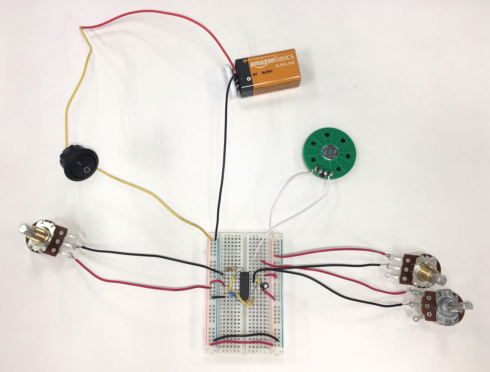
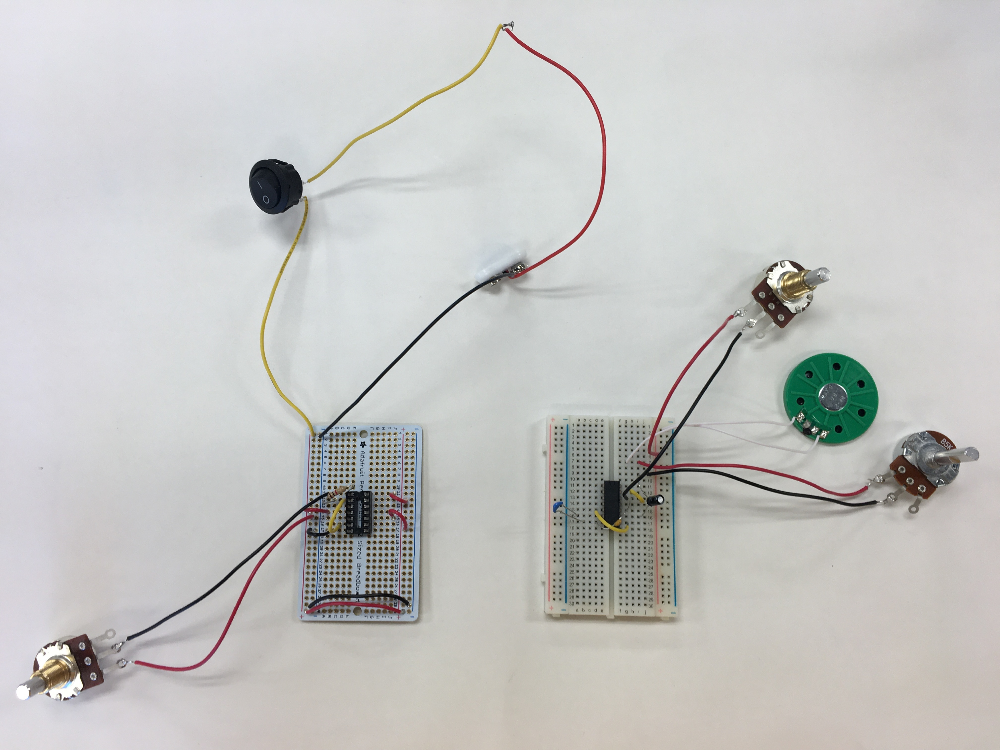
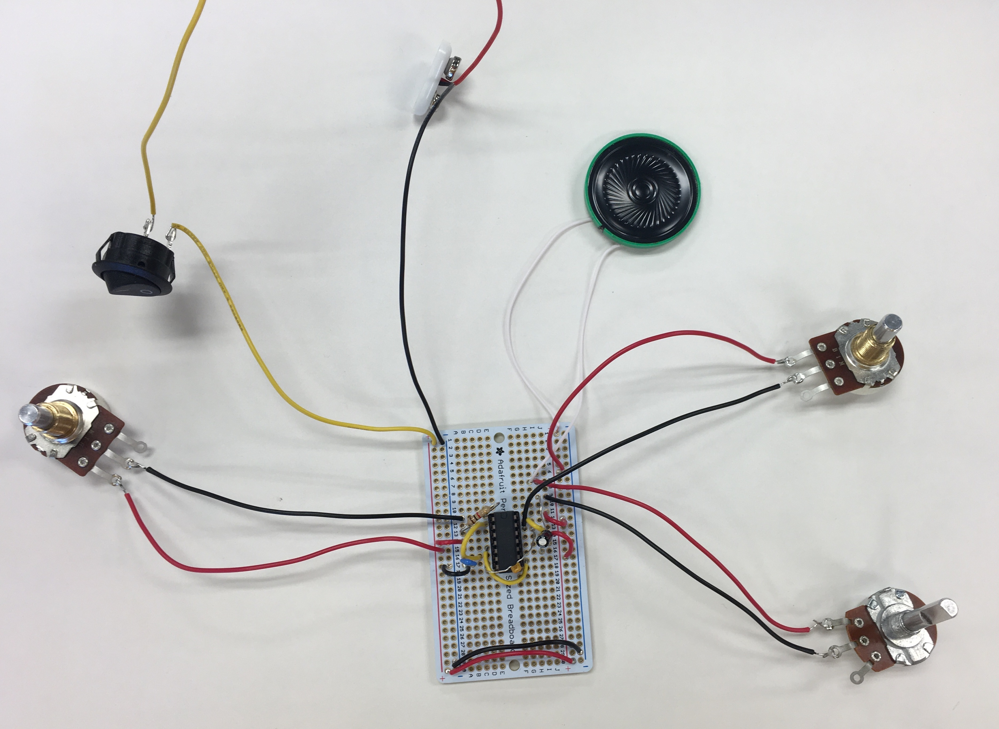
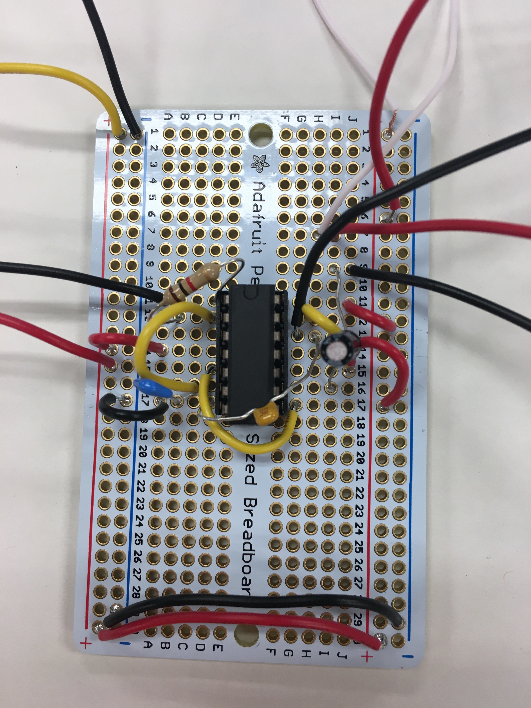

Clea Joy Ramos - E&D I - February 2021
In this project, we learned about soldering and circuits in order to create a synthesizer using a speaker, potentiometers, and more electrical components.
Part I: Construction on Breadboard
Part II: Construction on Perfboard
I first gathered the materials needed for the synthesizer and labeled all its components.
Resistors Capacitators |
 |
Next, I tested my potentiometers with a multimeter to identify which way the current flowed and labeled them. Next, I soldered black and red wires to the potentiometers and I soldered yellow neutral wires the switch so that they could be connected to the circuit.
|  |
| Potentiometers and Switch soldered to wires |
|---|
Then, I constructed my breadboard by inserting the chip, the potentiometers, the switch, resistors and the capacitors along with wires that would complete the circuit. The last items I connected were the speaker, battery clip and the battery. I used written instructions, pictures, and the schematic to help me place the components and the wires in the correct place.
 |
 |
| Synthesizer Schematics | Close up of Completed Breadboard |
|---|
This project introduced many new concepts and skills such as soldering and composing a breadboard which printed some challenges and difficulties. For example, when soldering wires to the switch, I initially had a cold solder because I did not get the components hot enough for the iron solder to attach well. After a few attempts of reheating the switch, I was able to successfully add more solder to form a solid joint between the wire and the switch.
Another difficulty I encountered was when I assembling and testing my breadboard. This was the first time I completed a circuit on a breadboard, so I was a little confused when following the instructions on how and where to place certain wires and components. When I finished my breadboard and adjusted the potentiometers, the speaker did not make sound. So, I tested components like my chip, and I compared my breadboard to the example breadboard that Ms. Riley had made. This method of checking helped me to identify incorrect placements of some wires. Once I found my errors, I turned on the switch and the potentiometers of the circuit, and the speaker finally produced sounds.
|  | |
| Completed Breadboard Synthesizer | Video of Breadboard Synthesizer |
|---|
Once I finished constructing the breadboard, I transferred the components onto a perfboard to create a more permanent circuit. I used pictures of my breadboard to help me correctly transfer all of the wires and components. Then I soldered each component to the perfboard.
|  |
| Transferring electrical components from the breadboard (right) to the perfboard (left) |
|---|
At first, I found it challenging to correctly place some of the electrical components onto the perfboard because it was difficult to see which pin each wire was in. So, I had to be very careful when placing my electrical components in the correct holes. I frequently referenced my pictures of my breadboard to confirm the correct placement of the components. Additionally, it was difficult to solder the components in the small holes of the perfboard. I had to be very careful and make sure that the solder in one hole did not overflow into another hole because that might disrupt the flow of energy.
|  |  | |
| Completed Synthesizer perfboard | Close up of completed Synthesizer perfboard | Video of Perfboard Synthesizer |
|---|